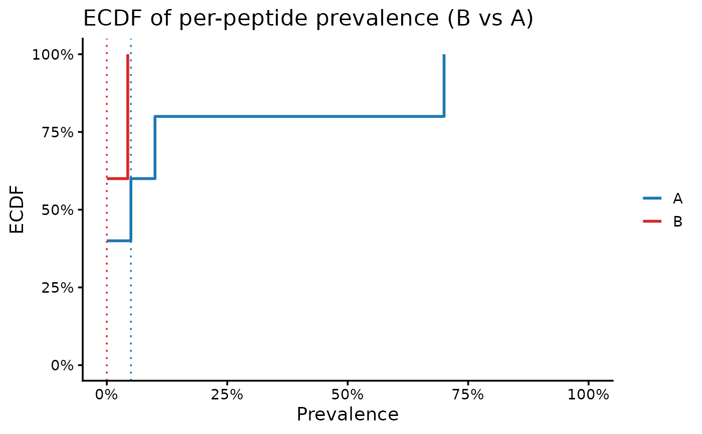

Plot empirical cumulative distribution functions (ECDFs) of
per-peptide prevalence for two groups using a
ph_compute_prevalence()-style table. The plot compares the cumulative
distribution of prevalence values between the two groups and optionally
annotates median shifts and a Kolmogorov-Smirnov (KS) test summary.
Usage
ecdf_plot(
prev_tbl,
group_pair_values = NULL,
group_labels = NULL,
line_width_pt = 1,
line_alpha = 1,
group1_line_color = "#1f77b4",
group2_line_color = "#d62728",
show_median_lines = TRUE,
show_ks_test = TRUE,
plot_title = NULL,
plot_subtitle = NULL,
x_label = NULL,
y_label = NULL
)Arguments
- prev_tbl
Data frame with columns
group1,group2,prop1,prop2. Optionalfeaturecolumns are ignored.- group_pair_values
Optional length-2 character vector
c(group1, group2). Use this whenprev_tblcontains multiple group pairs.- group_labels
Optional length-2 character vector of display labels
c(label_group1, label_group2). Defaults togroup1/group2.- line_width_pt
Line width for ECDF steps (ggplot units). Default 1.0.
- line_alpha
Line alpha for ECDF steps. Default 1.0.
- group1_line_color, group2_line_color
Line colors for group1 and group2.
- show_median_lines
Logical; add median lines. Default
TRUE.- show_ks_test
Logical; add KS test summary to subtitle. Default
TRUE.- plot_title, plot_subtitle
Optional plot labels.
- x_label, y_label
Optional axis labels.
Details
Each group is represented by a step function showing the fraction of features with prevalence less than or equal to a given value. Vertical median lines can be added for each group, and the subtitle can include the KS statistic and p-value along with the median difference.
Examples
# \donttest{
library(dplyr)
library(rlang)
ps <- load_example_data("small_mixture")
# pick the grouping column
group_col <- "group"
prev_res <- ph_prevalence_compare(
ps,
rank_cols = "peptide_id",
group_cols = group_col,
collect = TRUE
)
#> [13:44:32] INFO prevalence_compare (per-rank fdr)
#> Warning: Unknown or uninitialised column: `peptide_library`.
#> Warning: Unknown or uninitialised column: `meta`.
#> [13:44:32] INFO preparing input data
#> - ranks: peptide_id
#> - group_cols: group
#> - exist_col: exist
#> - weight_mode: peptide_count
#> - collect: TRUE
#> - pop_k_min: 1
#> - paired: FALSE
#> [13:44:32] INFO ranks resolved
#> - - available: peptide_id
#> [13:44:32] INFO grouping universes
#> - - per-column only: group
#> [13:44:32] INFO computing cohort sizes (n) per universe
#> [13:44:32] INFO computing presence per sample via k-of-n rule
#> [13:44:32] INFO counting present samples per feature (pop, non-paired)
#> [13:44:32] INFO fdr accounting
#> - pool per rank: peptide_id=5
#> - universes: group (k=2, pairs=1)
#> - pairs across universes (sum): 1
#> - total tests m per rank = pool * pairs: peptide_id=5
#> [13:44:32] INFO building pairwise comparisons
#> [13:44:33] OK materialized duckdb table
#> - name: ph_prev_20260408_134432
#> - computing p-values (fisher-only); then fdr per rank (bh /
#> wbh)
#> [13:44:34] OK prevalence_compare (per-rank fdr) - done
#> -> elapsed: 2.031s
prev_tbl <- as.data.frame(prev_res)
pair_tbl <- unique(prev_tbl[, c("group1", "group2")])
group_pair <- c(pair_tbl$group1[1], pair_tbl$group2[1])
p <- ecdf_plot(
prev_tbl,
group_pair_values = group_pair,
group_labels = group_pair,
show_ks_test = FALSE
)
print(p)

# }